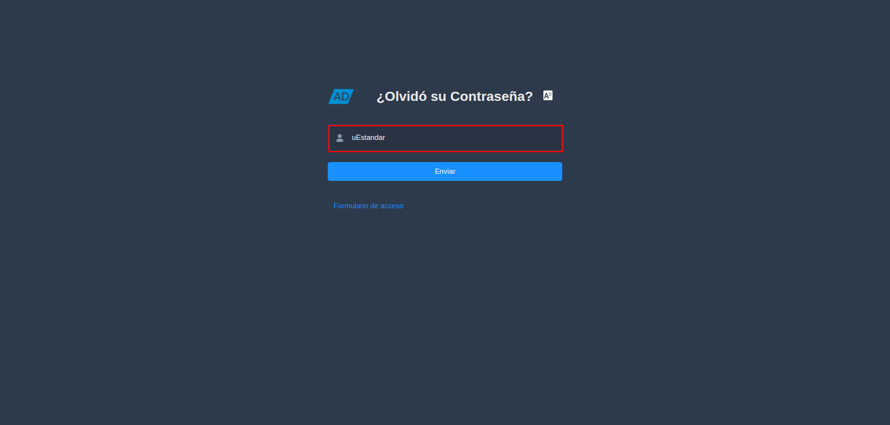
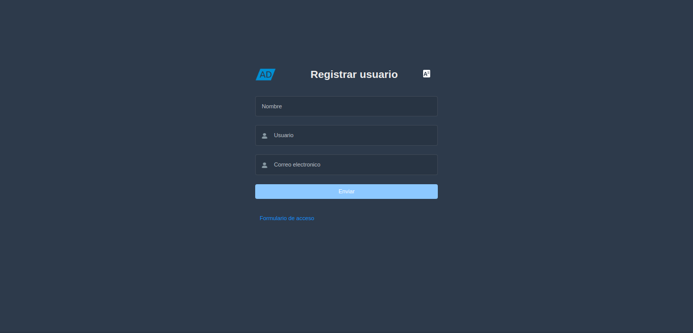
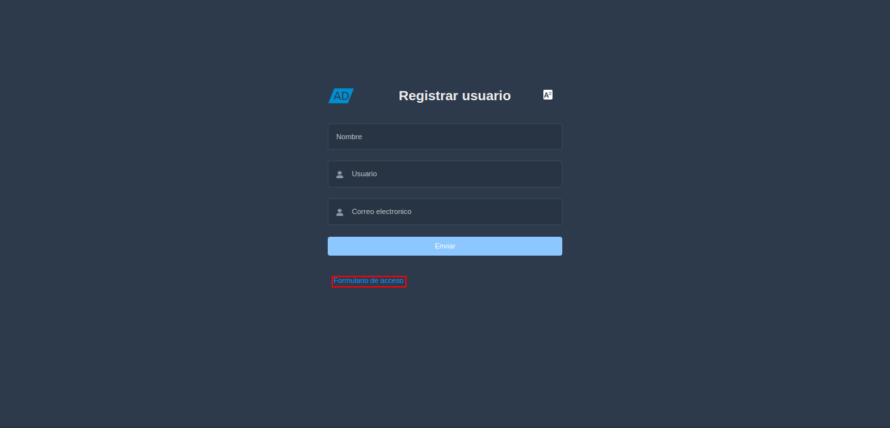

1.1. Inicio de Sesión¶
En ADempiere el login es el proceso que permite el acceso de forma segura utilizando la identificación de un usuario único y su contraseña, a continuación se explicará el procedimiento.
Para acceder o iniciar sesión en ADempiere, el usuario requiere lo siguiente:
Servicio de ADempiere (URL del Servicio)
Credenciales de acceso (Facilitadas por un consultor de ERPyA)
Usuario: uEstandar
Clave: uEstandar
Rol asignado al usuario creado por ERPyA
Al ingresar a la url del servicio de ADempiere facilitada por un consultor de ERPyA, podrá visualizar el formulario de acceso, el cual cuenta con los campos necesarios para iniciar sesión en el idioma que el usuario lo requiera.

Imagen 1. Formulario de Acceso a ADempiere
Introduzca en el campo “Usuario”, el usuario previamente facilitado por el consultor de ERPyA.

Imagen 2. Usuario
Introduzca en el campo “Contraseña”, la contraseña del usuario previamente facilitada por el consultor de ERPyA.

Imagen 3. Campo Contraseña del Usuario
Seleccione en el campo “Lenguaje”, el idioma con el cual requiere ingresar al servicio de ADempiere.

Imagen 4. Campo Lenguaje para Acceso
Seleccione la opción “Acceso”, para cargar las credenciales de acceso y proceder a detallar el rol, la organización, compañía y almacén para ingresar a ADempiere.

Imagen 5. Opción Acceso para Cargar las Credenciales
1.1.1. Recuperar Contraseña¶
Si el usuario no recuerda la contraseña para iniciar sesión puede recuperarla seleccionando la interrogante ¿Olvidó su Contraseña?.

Imagen 6. Interrogante ¿Olvidó su Contraseña?
Podrá visualizar el formulario “Olvidó su Contraseña”, con el campo “Usuario o Correo”, donde debe ingresar el usuario de acceso al servicio de ADempiere.

Imagen 7. Ventana Olvidó su Contraseña
Seleccione la opción “Enviar”, para que ADempiere envie por correo electrónico, la verificación de usuario y la URL para cambiar la contraseña.

Imagen 8. Opción Enviar para Recuperar Contraseña
La opción “Formulario de Acceso”, permite regresar nuevamente al formulario de acceso.

Imagen 9. Opción Formulario de Acceso
1.1.2. Registrarse¶
Si el usuario requiere registrarse, también puede hacerlo seleccionando la opción “Registrarse”.

Imagen 10. Opción Registrarse
Podrá visualizar el formulario “Registrar Usuario”, con los campos necesarios para crear el usuario en ADempiere.

Imagen 11. Formulario Registrar Usuario
Introduzca en el campo “Nombre”, el nombre de la persona que se esta registrando.

Imagen 12. campo Nombre del Formulario Registrar Usuario
Introduzca en el campo “Usuario”, el usuario para el acceso a ADempiere.

Imagen 13. Campo Usuario del Formulario Registrar Usuario
Introduzca en el campo “Correo Electrónico”, el correo electrónico del usuario que se esta registrando.
En dicho correo será enviado un mensaje con la contraseña de acceso a ADempiere.

Imagen 14. Campo Correo Electrónico del Formulario Registrar Usuario
Seleccione la opción “Enviar”, para crear el usuario en ADempiere y enviar la información al correo ingresado previamente.

Imagen 15. Opción OK del Formulario Registrar Usuario
Note
Al finalizar el proceso, ADempiere regresa de manera automática al formulario de acceso.
La opción “Formulario de Acceso”, permite regresar nuevamente al formulario de acceso.

Imagen 16. Opción Formulario de Acceso